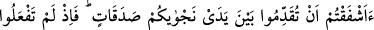
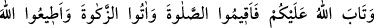
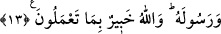

onların kalpleri için daha iyi, nefisleri için daha temizdir. İrade ve îman sâhibi olmakla
beraber, bazı haklarını yerine getirmekten âciz ve kusurlu olduklarını bilirlerse, Allah
Teâlâ onların kusurunu bağışlar. Zira O, kullarına karşı son derece merhametlidir.
Onları büyükler derecesine ulaştırır.
Mevlânâ Câmî (r.h.) şöyle demiştir:
Ey Şeyh! Kendi varlığından bir arpa boyu azaltmadıkça
Her saat ibâdet harmanını fazlalaştırmanın ne faydası var?
13. Gizli bir şey konuşmanızdan önce sadakalar vermekten çekindiniz mi? Bunu
yapmadığınıza ve Allah da sizi affettiğine göre artık namazı kılın, zekâtı verin
Allah’a ve Rasûlü’ne itâat edin. Allah yaptıklarınızdan haberdardır.
“Gizli bir şey konuşmanızdan önce sadakalar vermekten çekindiniz mi?” Âyette
geçen işfâk kelimesi, hoşlanılmayan bir şeyden çekinmek ve korkmak demektir. Baştaki
soru ise, sorulanın var olduğunu ikrar ve ifâde içindir. Bazı kişiler, emre muhâlefet için
değil, çekindiklerinden Rasûlullah (a.s.) ile gizli konuşmayı terk etmişlerdi. Muhataplar
cemi oldukları için sadakât kelimesi çoğul olarak gelmiştir.
Bazı tefsirlerde şöyle denmiştir: Önceki âyet-i kerîmede sadaka kelimesi tekil olarak
geldi ki bu, az miktarda da olsa sadakanın yeterli olacağını ifâde etmek içindir. İkinci
âyet-i kerimede ise, gizli konuşanların ve konuşmaların çok olmasından dolayı çoğul
olarak gelmiştir. Buna göre âyetin mânâsı şöyledir: “Ey zenginler! Sadakalar vermekten
dolayı fakir düşmekten mi korktunuz?” Sözü kısaltmak için meful olan fakr kelimesi
hazfedilmiştir. “Vermekten” anlamındaki en tükaddimû cümlesi “vermekten dolayı”
anlamındadır. Yahut “şeytan sizi fakirlikle korkuttuğundan dolayı, sadaka vermekten
korktunuz mu?” mânâsınadır.
Şair şöyle demiştir:
Vakarlı ve sakin ol, sadaka vermekten korkup mala haris olma.
Çünkü bizim malımız, bizden sonraya kalacak vârisimizindir.
“Bunu yapmadığınıza,” emredileni yerine getiremediğinize ve size bu zor geldiğine
ve “Allah da sizi affettiğine göre” sizin üzerinizdeki sadaka verme yükümlülüğünü
düşürüp sadaka vermemeye izin verdiğine göre.
Burada, ashâb-ı kiramın sadaka vermeden gizli konuşarak bu hüküm hakkında